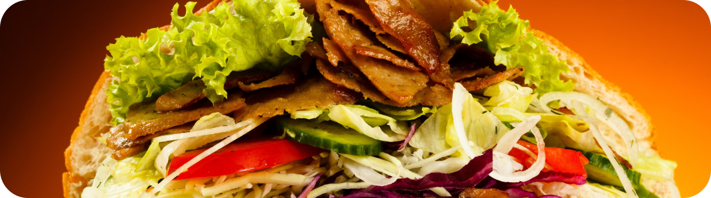

TURKISH
Turkish Kebab

- 250 gr tepung terigu
- 1/2 sdt garam
- 1/2 sdt baking powder
- 1/2 sdt gula pasir
- 3 sdm minyak goreng
- 100 ml susu cair panas
- 1/2 kg daging sapi, iris melintang serat
- 2 siung bawang putih
- 2 cm jahe
- 1/2 sdt ketumbar
- 100 cc yoghurt rasa plain
- 3 buah cabai merah
- Garam
- Lada
- Masukkan tepung terigu + garam + baking powder + gula pasir dalam wadah/mangkok, tuangi minyak goreng, aduk hingga berbutir-butir
- Masukkan susu cair panas sedikit demi sedikit sambil diuleni hingga adonan halus licin dan kalis.
- Tutup adonan dengan plastik/lap bersih dan istirahatkan selama 1/2 jam. Bagi adonan menjadi 8 bulatan dengan ukuran kurang lebih 50 gram, istirahatkan kembali selama 1/2 jam.
- Ambil 1 bulatan adonan, pipihkan dan giling dengan rolling pin kayu hingga menjadi bulat lebar dan tipis.
- Panggang diatas pan dadar teflon dengan api kecil. Balik tortilla bila sudah mulai menggelembung, panggang hingga matang dan terlihat ada efek2 bercak coklat sedikit gosong. Sisihkan dan tutup dengan lap bersih.
- Cuci bersih daging sapi, pukul-pukul daging hingga agak melebar.
- Haluskan bumbu cabai merah, bawang putih, jahe dan ketumbar.
- Campurkan daging sapi dengan bumbu halus, hingga daging berbumbu rata.
- Beri yoghurt, garam dan lada secukupnya. Diamkan kurang lebih 10 menit. Setelah bumbu meresap, panggang daging hingga matang.
- Kebab turki : panggang tortila sebentar saja di atas pan atau wajan yang sudah dioles margarine hingga muncul bercak kecoklatan.
- Tumis bawang bombay sebentar saja, hingga agak layu. Letakkan tortila di atas piring, tata bawang bombay, selada, timun, dan tomat di tengah tortila dengan bentuk memanjang.
- Semprotkan saus tomat dan saus sambal secukupnya di atas sayuran. Tambahkan daging kebab di atasnya, ratakan bentuk memanjang.
- Semprotkan mayones secukupnya di atas daging, lalu gulung tortila atau roti kebab dan padatkan. Sajikan.